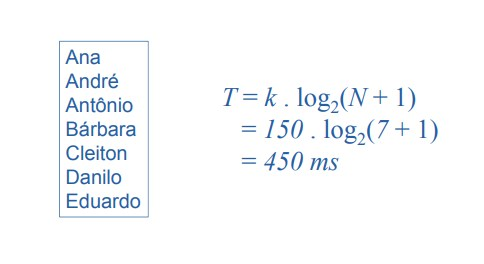
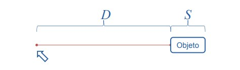
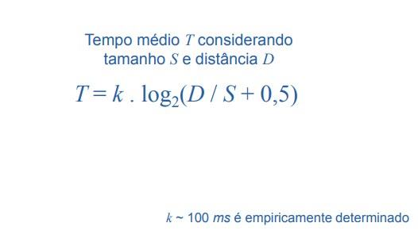
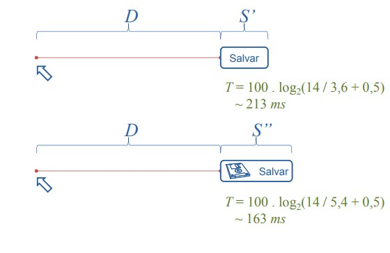
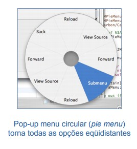

Lei de Hick-Hyman
Relaciona o tempo que leva uma pessoa tomar uma decisão com o número de escolhas possíveis.
Assume que pessoas:s
Subdividem o conjunto total de opções em categorias
Eliminam aproximadamente metade das opções a cada passo
Não selecionam considerando as escolhas uma a uma (tempo linear)
Pode ser aplicada caso haja um princípio de organização das opções.
Lei de Hick-Hyman

Exemplo

Lei de Fitts
Relaciona o tempo T que uma pessoa leva para apontar para algo apontar para algo com o tamanho com o tamanho S do objeto do objeto-alvo e com a distância D entre a mão e o objeto

Ajuda designers sobre o tamanho e localização de elementos de interface


Importante para aplicações em que o desempenho é crítico
Existem variações da equação conforme dispositivos e paradigmas de interação
Exemplos
Formato de menus
Posicionamento de palheta de ferramentas e menus
